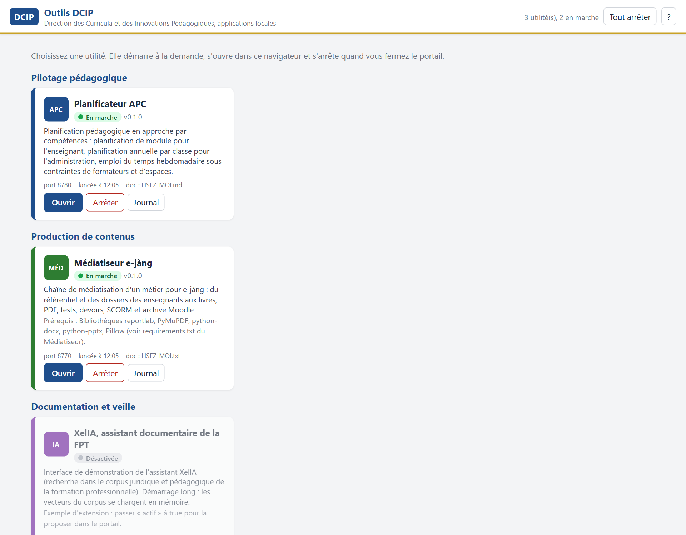
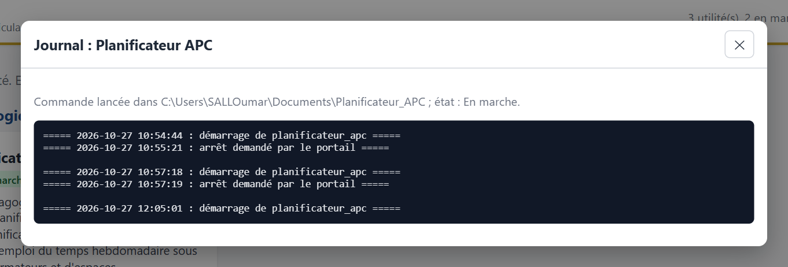

Le problème
En quelques mois, la Direction s'est dotée de plusieurs applications locales : un médiatiseur de cours, un planificateur en approche par compétences, d'autres en préparation. Chacune tourne sur l'ordinateur de celui qui l'utilise, ce qui convient à des établissements où la connexion est rare. Mais chaque outil avait son lanceur, son adresse, son installateur. Pour les équipes des établissements et les membres de la communauté de pratique, c'était autant de portes à retenir.
Trois exigences
Une seule porte. Installer une fois, ouvrir un portail, choisir.
Des outils qui restent eux-mêmes. Fusionner sans réécrire : chaque application garde son code, ses données et sa vie propre.
Une place pour la suite. Ajouter un outil demain sans rouvrir le portail.
Le principe retenu
Un portail léger, des outils autonomes, un registre de descriptions. Le portail lit des fichiers de description, un par utilité : nom, dossier, commande, port, ou simple lien. Il démarre l'outil choisi dans son propre processus, attend qu'il réponde, l'ouvre dans le navigateur, puis l'arrête à la fermeture. Il ne relaie rien, ne réécrit rien, n'impose rien.
Chaque application reçoit l'adresse du portail et affiche un bouton de retour. Un outil déjà lancé par un autre moyen est reconnu et simplement ouvert. Ce qui ne démarre pas laisse un journal lisible depuis le portail.
Le portail

| Utilité | Ce qu'elle fait |
|---|---|
| Planificateur APC | planification de module, planification annuelle par classe, emploi du temps hebdomadaire sous contraintes |
| Médiatiseur e-jàng | du référentiel et des documents des enseignants à un cours prêt à déposer sur la plateforme |
| e-jàng | lien vers la plateforme nationale de formation |

L'extension
Ajouter une utilité ne demande aucune programmation du portail : un fichier de description déposé dans un dossier suffit ; la page se recharge. Un outil peut être un serveur local à démarrer (dossier, commande, port) ou un simple lien vers un site. Les outils d'administration, dont cette section d'ajout, sont masqués aux utilisateurs ordinaires et s'ouvrent sur demande.
La distribution suit le même esprit : un installateur Windows qui ne demande ni droits d'administrateur ni Python, une édition portable sans installation, une édition macOS. La désinstallation ne retire jamais les données des utilisateurs.
La vérification
Ce que ce travail ne montre pas
Aucun code source, aucun installateur, aucune donnée. Les captures proviennent d'un poste de démonstration. Ce qui est présenté est la démarche : réunir des outils sans les dénaturer, puis préparer leur multiplication.
Portail conçu au sein de la Direction des Curricula et des Innovations Pédagogiques, ministère chargé de la formation professionnelle et technique, Sénégal. Version 0.1, diffusée en octobre 2026.
Oumar SALL, technopédagogue et Doctorant en Sciences de l'Éducation. Voir les autres réalisations ou le dépôt de présentation.